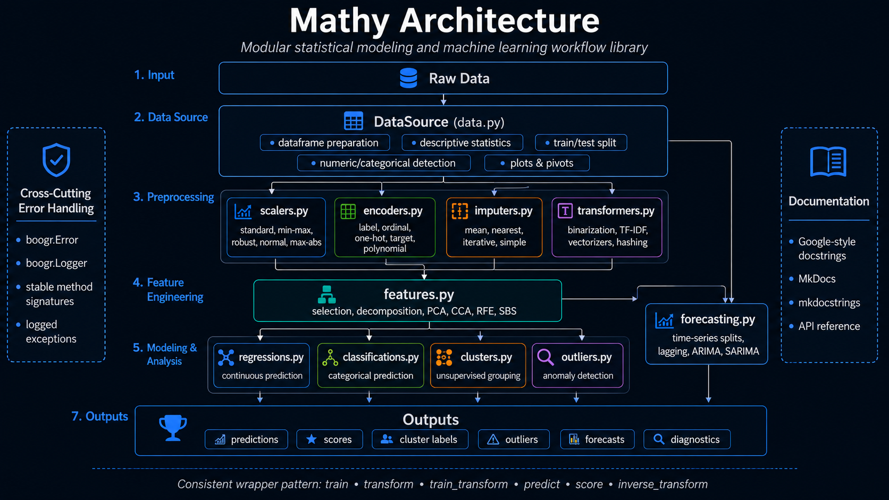

Architecture¶

Mathy is organized as a modular statistical modeling and machine learning utility library. The architecture separates data preparation, transformation, feature engineering, unsupervised learning, supervised learning, outlier detection, and forecasting into focused Python modules that can be used independently or combined into full modeling workflows.
🧭 Architectural Purpose¶
Mathy provides a consistent wrapper layer around common pandas, NumPy, SciPy, statsmodels, and scikit-learn workflows. Each module focuses on a distinct stage of the analytical lifecycle while preserving a common usage pattern across training, transformation, prediction, scoring, and model inspection.
The architecture is designed to support:
- repeatable data preparation
- reusable preprocessing components
- consistent estimator wrappers
- documented model workflows
- generated API documentation through MkDocs and mkdocstrings
- Google-style source documentation suitable for long-term project maintenance
🧱 Module Organization¶
Mathy is organized around the major stages of a data science workflow.
| Layer | Module | Responsibility |
|---|---|---|
| Data Management | data.py |
Dataframe preparation, descriptive statistics, train/test splits, pivots, plotting helpers, and statistical utility functions. |
| Scaling | scalers.py |
Standardization, normalization, min-max scaling, robust scaling, and maximum-absolute-value scaling. |
| Encoding | encoders.py |
Label encoding, ordinal encoding, one-hot encoding, target encoding, and polynomial feature expansion. |
| Imputation | imputers.py |
Mean imputation, nearest-neighbor imputation, iterative imputation, and configurable simple imputation. |
| Transformation | transformers.py |
Binary transformation, label binarization, multilabel binarization, TF-IDF transformation, vectorization, dictionary transformation, and hashing. |
| Feature Engineering | features.py |
Feature selection, decomposition, canonical correlation analysis, recursive elimination, and sequential selection. |
| Clustering | clusters.py |
K-Means, DBSCAN, agglomerative clustering, spectral clustering, mean shift, affinity propagation, Birch, and OPTICS. |
| Outlier Detection | outliers.py |
Isolation forest, one-class classification, local outlier factor, and covariance-based outlier detection. |
| Regression | regressions.py |
Supervised regression wrappers for linear, regularized, ensemble, tree-based, support-vector, nearest-neighbor, Bayesian, and boosting models. |
| Classification | classifications.py |
Supervised classification wrappers for linear, tree-based, ensemble, support-vector, nearest-neighbor, discriminant, probabilistic, and boosting models. |
| Forecasting | forecasting.py |
Time-series splitting, expanding windows, lagged features, lag-based regressors, ARIMA, and SARIMA models. |
🔄 Workflow Architecture¶
Mathy supports a staged workflow that begins with dataframe preparation and ends with model evaluation or forecasting output.
Raw Data
|
v
DataSource
|
+--> Descriptive Statistics
+--> Train/Test Split
+--> Numeric and Categorical Column Detection
|
v
Preprocessing
|
+--> Scaling
+--> Encoding
+--> Imputation
+--> Transformation
|
v
Feature Engineering
|
+--> Feature Selection
+--> Dimensionality Reduction
+--> Recursive Elimination
+--> Sequential Selection
|
v
Modeling
|
+--> Regression
+--> Classification
+--> Clustering
+--> Outlier Detection
+--> Forecasting
|
v
Scores, Predictions, Labels, Forecasts, Diagnostics
🧩 Core Design Pattern¶
Most Mathy wrapper classes follow a consistent operational pattern.
| Operation | Purpose |
|---|---|
train(...) |
Fit the underlying estimator or transformer. |
transform(...) |
Transform input data using a fitted transformer. |
train_transform(...) |
Fit and transform data in one operation. |
predict(...) |
Generate model predictions or cluster labels. |
score(...) |
Evaluate the fitted model where supported. |
inverse_transform(...) |
Convert transformed values back to their original representation where supported. |
__dir__(...) |
Expose a stable interactive inspection surface. |
This convention makes the modules easier to use together because preprocessing wrappers, feature-engineering wrappers, and model wrappers expose similar method names even when the underlying scikit-learn objects differ.
🗃️ Data Preparation Layer¶
The data preparation layer is centered on DataSource in data.py.
DataSource wraps a pandas dataframe and derives common modeling metadata, including:
- feature names
- target values
- target names
- numeric columns
- categorical columns
- numeric summary statistics
- covariance and variance statistics
- train/test splits
- cached transformed data
- optional pivot tables
- plotting support
This layer provides the foundation for downstream preprocessing and modeling. It allows Mathy workflows to begin with a dataframe and move quickly into transformations, feature selection, or estimator training.
🧪 Preprocessing Layer¶
The preprocessing layer is distributed across four modules:
scalers.pyencoders.pyimputers.pytransformers.py
These modules prepare raw columns and feature matrices for modeling. They handle common requirements such as scaling numeric values, encoding categorical values, imputing missing values, vectorizing text, and creating transformed feature matrices.
Scaling¶
The scaling layer wraps common sklearn scalers:
StandardScalerMinMaxScalerRobustScalerNormalScalerMaxAbsScaler
These wrappers normalize numeric feature distributions before they are used by models that are sensitive to feature scale.
Encoding¶
The encoding layer wraps categorical and feature-expansion tools:
LabelEncoderOrdinalEncoderOneHotEncoderTargetEncoderPolynomialFeatures
These wrappers convert categorical labels and feature values into numeric forms suitable for model training.
Imputation¶
The imputation layer handles missing values with multiple strategies:
MeanImputerNearestImputerIterativeImputerSimpleImputer
These wrappers support workflows where incomplete observations must be transformed before model training or evaluation.
Transformation¶
The transformation layer provides wrappers for binary transformation, label binarization, TF-IDF transformation, text vectorization, dictionary vectorization, and feature hashing.
This layer is useful when preparing categorical, textual, sparse, or high-dimensional inputs.
🧬 Feature Engineering Layer¶
The feature engineering layer is implemented in features.py.
This layer supports feature reduction, selection, ranking, and decomposition. It allows a workflow to reduce dimensionality, identify informative predictors, and prepare a more efficient model input matrix.
Representative capabilities include:
- variance-threshold selection
- principal component analysis
- canonical correlation analysis
- best-feature selection
- percentile-based selection
- sequential backward selection
- recursive feature elimination
The feature engineering layer is positioned between preprocessing and supervised or unsupervised modeling.
🤖 Modeling Layer¶
Mathy includes separate modeling layers for regression, classification, clustering, and outlier detection.
Regression¶
The regression layer in regressions.py wraps supervised estimators that predict continuous values.
It supports a broad set of model families, including linear models, regularized models, tree-based
models, ensemble models, support-vector models, Bayesian models, nearest-neighbor models, and
boosting models.
Classification¶
The classification layer in classifications.py wraps supervised estimators that predict
categorical labels. It includes linear classifiers, probabilistic classifiers, tree-based
classifiers, ensemble classifiers, support-vector classifiers, nearest-neighbor classifiers,
discriminant classifiers, and boosting classifiers.
Clustering¶
The clustering layer in clusters.py wraps unsupervised estimators that group observations based on
similarity or density. It supports centroid-based, density-based, hierarchical, spectral, and
affinity-based clustering approaches.
Outlier Detection¶
The outlier detection layer in outliers.py identifies anomalous observations using isolation,
local-density, one-class, and covariance-based methods.
📈 Forecasting Layer¶
The forecasting layer is implemented in forecasting.py.
It supports time-series modeling through:
- time-series splitters
- expanding-window splits
- lagged feature construction
- lag-based boosting models
- lag-based quantile models
- ARIMA models
- SARIMA models
This layer is separate from the general regression layer because time-series forecasting requires ordered observations, lagged predictors, and specialized validation strategies.
🧾 Documentation Architecture¶
Mathy uses MkDocs and mkdocstrings to generate documentation from the source code.
The documentation system uses:
| Component | Purpose |
|---|---|
mkdocs.yml |
Defines the site, theme, plugins, navigation, Markdown extensions, and mkdocstrings settings. |
docs/index.md |
Main documentation landing page. |
docs/architecture.md |
Project architecture and module organization. |
docs/user-guide/ |
Task-oriented usage documentation. |
docs/api/ |
API pages that render source documentation through mkdocstrings. |
| Google-style docstrings | Source documentation parsed by mkdocstrings and griffe. |
Each API page uses a simple mkdocstrings directive:
The directive tells mkdocstrings to load the Python module and render its module, class, method, argument, return, and exception documentation.
🧯 Error-Handling Architecture¶
Mathy source modules use a consistent wrapped exception pattern built around boogr.Error and
boogr.Logger.
The pattern captures:
- source module
- class or function context
- stable method signature
- original exception
- logged exception record
The standard structure is:
except Exception as e:
exception = Error( e )
exception.module = 'mathy'
exception.cause = 'ClassName'
exception.method = 'method_name( self, *args ) -> return_type'
Logger( ).write( exception )
raise exception
For methods with multiple parameters, the method field uses the compact *args pattern to avoid
logging live values, user data, dataframe contents, file paths, or other sensitive runtime state.
🧠 Design Principles¶
Mathy follows these design principles:
| Principle | Description |
|---|---|
| Consistent wrappers | Similar operations use similar method names across different estimator families. |
| Source-driven documentation | API documentation is generated directly from Google-style source docstrings. |
| Separation of concerns | Data preparation, preprocessing, feature engineering, modeling, and forecasting are separated into focused modules. |
| Safe exception metadata | Error logs store stable method signatures rather than live runtime values. |
| Reusable workflows | Classes are designed to support repeated experimentation and notebook-driven modeling. |
| MkDocs compatibility | Documentation comments are structured for mkdocstrings and griffe parsing. |
🧭 End-to-End Usage Path¶
A typical Mathy workflow follows this path:
1. Load a pandas dataframe.
2. Create a DataSource instance.
3. Identify numeric, categorical, feature, and target columns.
4. Apply scaling, encoding, imputation, or transformation.
5. Select or reduce features.
6. Train a regression, classification, clustering, outlier, or forecasting model.
7. Generate predictions, labels, scores, or forecasts.
8. Review generated API documentation for class and method details.
🧱 Repository Documentation Map¶
The recommended documentation layout is:
docs/
├── index.md
├── architecture.md
├── development.md
├── user-guide/
│ ├── index.md
│ ├── data-preparation.md
│ ├── feature-engineering.md
│ ├── modeling.md
│ └── forecasting.md
└── api/
├── index.md
├── data.md
├── scalers.md
├── encoders.md
├── imputers.md
├── transformers.md
├── features.md
├── clusters.md
├── outliers.md
├── regressions.md
├── classifications.md
└── forecasting.md
✅ Build Verification¶
After adding or updating documentation pages, build the site from the repository root:
Run the local documentation server:
Open the local site: